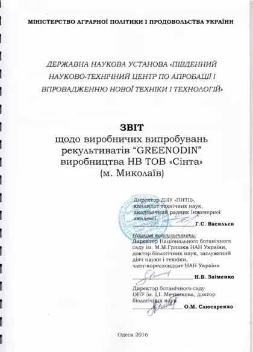
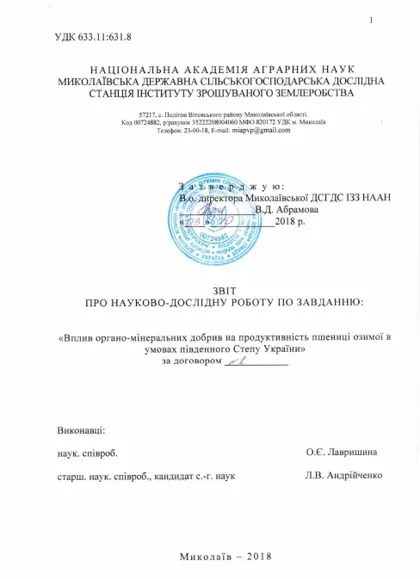
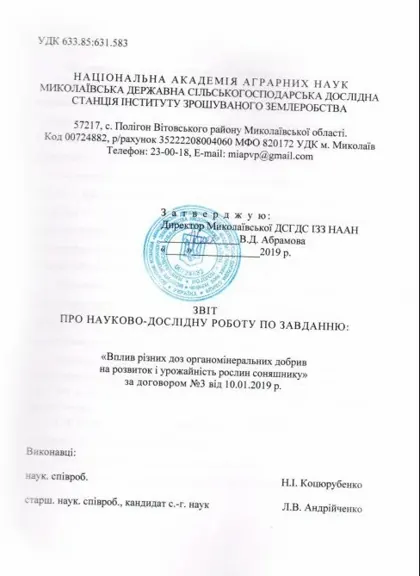
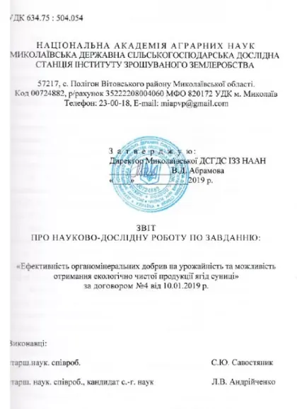
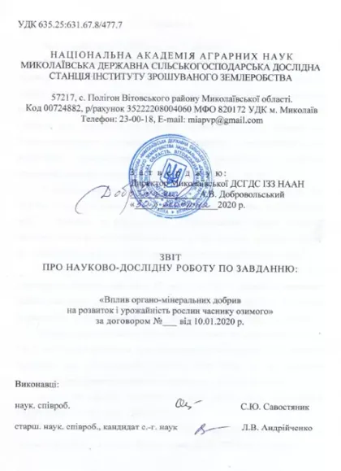
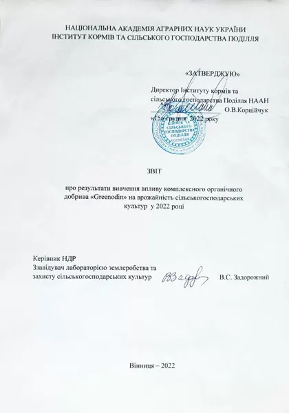

GREENODIN GRAY fertilizer
GREENODIN GRAY is a reclamation agent based on leonardite and silicon-containing minerals with a medium organic matter content. For restoring the fertility of all soil types, including soils that are contaminated or exhausted by monoculture.
Recommended for 31 crops
- Purpose
- Soil ameliorant and reclamation agent
- Manufacturer
- Ukraine
- Certification
- Organic Standard, Regulation (EU) 2018/848
- SKU
- GREENODIN GRAY
GREENODIN GRAY organic fertilizer, reclamation agent, is an innovative complex organic granulated fertilizer, ameliorant and reclamation agent based on leonardite and silicon-containing natural minerals, with a medium organic matter content and degree of mineralization.
Purpose
Increases plant adaptation to abiotic and biotic stress factors.
Lowers soil toxicity and slows the development of phytopathogenic microorganisms.
Medium water-holding capacity, which saves up to 30% of irrigation water
Improvement of the agrophysical properties of acidic and toxic soils.
 Apricot fertilizer
Apricot fertilizer Eggplant fertilizer
Eggplant fertilizer Grape fertilizer
Grape fertilizer Lawn fertilizer
Lawn fertilizer Chili pepper fertilizer
Chili pepper fertilizer Watermelon fertilizer
Watermelon fertilizer Cabbage fertilizer
Cabbage fertilizer Potato fertilizer
Potato fertilizer Carrot fertilizer
Carrot fertilizer Cucumber fertilizer
Cucumber fertilizer Peony fertilizer
Peony fertilizer Peach fertilizer
Peach fertilizer Pepper fertilizer
Pepper fertilizer Tomato fertilizer
Tomato fertilizer Radish fertilizer
Radish fertilizer Boxwood fertilizer
Boxwood fertilizer Beetroot fertilizer
Beetroot fertilizer Tulip fertilizer
Tulip fertilizer Chrysanthemum fertilizer
Chrysanthemum fertilizer Onion fertilizer
Onion fertilizer Garlic fertilizer
Garlic fertilizer Sweet cherry fertilizer
Sweet cherry fertilizer Rose fertilizer
Rose fertilizer Buckwheat fertilizers
Buckwheat fertilizers Wheat fertilizers
Wheat fertilizers Barley fertilizers
Barley fertilizers Maize (corn) fertilizers
Maize (corn) fertilizers Chickpea fertilizers
Chickpea fertilizers Sunflower fertilizers
Sunflower fertilizers Sugar beet fertilizers
Sugar beet fertilizers Hemp fertilizers
Hemp fertilizers
For restoring and increasing the fertility of all soil types contaminated with organic waste and heavy metals
For use in urban plantings, single-species plantings and soils contaminated with toxicants.
- leonardite, modified natural silicon-containing minerals. Active substance: active silicon.
- macro- and microelements needed for plant growth and for greater resistance to stress factors
- agronomically beneficial microorganisms
Physical and chemical properties of GREENODIN GRAY
Sizes: granules 3–5 mm; microgranules 1–2 mm.
Technical specifications: TU U 20.1-13856524-001:2014. Guaranteed shelf life of the packaged mixture is three years from the date of manufacture. Storage conditions: during transport, loading and unloading the product must be protected from precipitation. Store on sites protected from precipitation, groundwater and direct sunlight. The GREENODIN GRAY reclamation agent was developed by leading Ukrainian scientists. The product is certified under the Standard for the production of inputs permitted in organic agriculture and processing that comply with the requirements of Regulation (EU) 2018/848, certificate No. 23-0504-01/02 dated 16.10.2023. The manufacturer reserves the right to change the packaging design
It depends on the agrochemical characteristics of the soil, but on average: for open and protected farming (greenhouses, glasshouses):
- 250 kg of GREENODIN organic fertilizers per 1 ha, spread
- 2.5 kg of GREENODIN per 100 m² of land, spread
- 25 g of GREENODIN organic fertilizers per 1 sq. m, spread
- 25 g of GREENODIN per 1 running meter, spread
when growing seedlings, ornamental plants, flowers:
- 0.25 l of GREENODIN organic fertilizers per 1 m³ of soil mix, mix in
- 0.25 kg (roughly one 250 ml glass) of GREENODIN organic fertilizers per 1 m³ of soil mix, mix in
- 25 g or one teaspoon of GREENODIN organic fertilizers per 1 l of soil mix, mix in
- 25 g of GREENODIN organic fertilizers per 1 sq. m, spread
The cumulative effect of the product lets you lower the maximum rate from 250 kg/ha (25 g/sq. m) to 80 kg/ha (8 g/sq. m) by the 5th season of use
It is recommended to mix the substrate into the soil mix for protected farming and use in pots, and in open-field farming
- spread the fertilizer by hand or with mechanical equipment, followed by watering.
GREENODIN organo-mineral mixtures are supplied in polyethylene bags of 5 kg and polypropylene sacks of 25 kg and 50 kg. Polypropylene is a strong material 65–70 µm thick.
For wholesale buyers, GREENODIN eco mixtures are supplied in big bags of 600 kg and 1000 kg.
Higher soil fertility with improved agronomic properties and biological indicators. Yield increase of up to 65%
Lower soil toxicity and slower development of phytopathogenic microorganisms
Stronger plant vitality and greater resistance to disease.
Stimulated plant development and up to 30% faster crop growth, with irrigation water use cut by up to 30%
The reclamation agent has a prolonged action and a cumulative effect. This allows you to reduce the application rate by about 20% every year.
Higher market value of the environmentally clean produce you grow and make
Improvement of the agrophysical, agrochemical and biological characteristics of made ground, technosols and cultivated soils in a megacity environment
The shelf life of GREENODIN GRAY is 3 years from the moment the package is opened.
After the guaranteed storage period expires, the fertilizers can be used as intended once the quality indicators have been checked against the technical specifications.
What is GREENODIN GRAY used for?
GREENODIN GRAY is a reclamation agent based on leonardite and silicon-containing minerals with a medium organic matter content. For restoring the fertility of all soil types, including soils that are contaminated or exhausted by monoculture.
What is the application rate of GREENODIN GRAY per hectare?
The base rate is 250 kg/ha (25 g/m², 2.5 kg per 100 m²). Thanks to the cumulative effect the rate is cut by 20% every year, down to 80 kg/ha from the 5th–6th season. The exact rate depends on the soil analysis.
How do you apply GREENODIN GRAY in the field?
The 3–5 mm granules are applied with a standard mineral fertilizer spreader before primary tillage or before sowing, after which the field is harrowed or disked.
What packaging does GREENODIN GRAY come in?
Polyethylene bags of 5 kg, polypropylene sacks of 25 and 50 kg. For farms and wholesale buyers, big bags of 600 to 1,100 kg.
Which crops is GREENODIN GRAY suitable for?
Buckwheat, wheat, barley, corn, chickpeas, sunflower, sugar beet, hemp, apricot, eggplant, grapes, lawn, hot pepper, watermelon, cabbage, potatoes, carrots, cucumbers and others.
Is there scientific evidence of effectiveness?
Yes, the fertilizer was tested by research institutions of the NAAS. 2016: GREENODIN reclamation agents gave an additional wheat yield of the «Zorya Ukrainy» variety: BLACK +25%, GRAY +30% grain. Spreaders followed by harrowing, or application before disking, are recommended. 2018: yield on the fertilized variants was on average 26.9% (6.3 c/ha) higher than the control. GREENODIN GRAY at 150 or 300 kg/ha before pre-sowing cultivation is recommended: 39.9–42.9 c/ha, profitability 128–140%. 2019: the highest yield of the Oplot hybrid, 30.9 and 30.7 c/ha, was obtained with 300 and 500 kg/ha of GREENODIN GRAY, 0.4–11.7 c/ha more than the other variants. Profitability at 300 kg/ha was 154%. 2019: the maximum yield of the strawberry variety Rozana Kyivska, 66.2 c/ha, came with GREENODIN GRAY at 500 kg/ha broadcast plus N45P30K15 fertigation. GREENODIN GRAY reduced copper and zinc content in the berries by 23–30%. 2020: the highest yield of winter garlic, 15.3–15.9 t/ha, came with GREENODIN GRAY or GREENODIN MICROBOX at 300 kg/ha before primary tillage. Profitability 139–140%. 2022: GREENODIN GRAY at 250 kg/ha gave a yield gain over the control: grain corn +17%, potatoes +14%, soybeans +12%. The reports are on the "Documents" tab.
Can different GREENODIN lines be combined?
Yes. Fertilizers from different GREENODIN lines can be combined depending on the acidity and composition of the soil. GREENODIN also lets you gradually reduce mineral fertilizers, up to giving them up completely.
Can it be used in organic farming?
Yes. GREENODIN products have been confirmed by the certification body Organic Standard for use in organic farming in accordance with Regulation (EU) 2018/848. A scan of the certificate is on the Patents and certificates page.
Is the fertilizer safe for people, bees and animals?
Yes. The fertilizer is safe for people, bees and animals and contains no synthetic chemicals or GMOs.
Trial reports

Field trials of GREENODIN soil restorers2016 report · Southern Scientific and Technical Centre for Testing and Implementation of New Machinery and Technologies, OdesaGREENODIN soil restorers increased the yield of Zoria Ukrainy wheat: BLACK +25%, GRAY +30% grain. Application with spreaders followed by harrowing, or before discing, is recommended.
Effect of organo-mineral fertilizers on winter wheat productivity in the southern Steppe of Ukraine2018 report · Mykolaiv State Agricultural Research Station, Institute of Irrigated Agriculture, NAASYields on the fertilized plots were on average 26.9% (0.63 t/ha) higher than the control. GREENODIN GRAY at 150 or 300 kg/ha before pre-sowing cultivation is recommended: 3.99–4.29 t/ha with 128–140% profitability.
Effect of different rates of organo-mineral fertilizers on sunflower development and yield2019 report · Mykolaiv State Agricultural Research Station, Institute of Irrigated Agriculture, NAASThe highest yields of the Oplot hybrid, 3.09 and 3.07 t/ha, were obtained with 300 and 500 kg/ha of GREENODIN GRAY, which is 0.04–1.17 t/ha more than the other treatments. Profitability at 300 kg/ha was 154%.
Effectiveness of organo-mineral fertilizers on yield and the possibility of obtaining environmentally clean strawberries2019 report · Mykolaiv State Agricultural Research Station, Institute of Irrigated Agriculture, NAASThe maximum yield of strawberry variety Rozana Kyivska was 66.2 c/ha with GREENODIN GRAY at 500 kg/ha broadcast and N45P30K15 fertigation. GREENODIN GRAY reduced the copper and zinc content of the berries by 23–30%.
Effect of organo-mineral fertilizers on winter garlic development and yield2020 report · Mykolaiv State Agricultural Research Station, Institute of Irrigated Agriculture, NAASThe highest winter garlic yield, 15.3–15.9 t/ha, came from GREENODIN GRAY or GREENODIN MICROBOX at 300 kg/ha before primary tillage. Profitability was 139–140%.
Effect of GREENODIN organic fertilizer on potato, soybean and maize yields2022 report · Institute of Feed Research and Agriculture of Podillia, NAAS, VinnytsiaGREENODIN GRAY at 250 kg/ha increased yields compared with the control: grain maize +17%, potatoes +14%, soybeans +12%.
Certificates
 Organic StandardCertificate No. 23-0504-01/02
Organic StandardCertificate No. 23-0504-01/02 IFOAM — Organics InternationalMembership of NV LLC Sinta
IFOAM — Organics InternationalMembership of NV LLC Sinta
Patents


GREENODIN White fertilizer
GREENODIN WHITE is a soil conditioner based on potassium silicate, tripoli, diatomite and leonardite with high…

GREENODIN Brown fertilizer
GREENODIN BROWN is a soil conditioner based on leonardite, diatomite and peat for acidifying alkaline and neutral…

GREENODIN Black fertilizer
GREENODIN BLACK is a soil conditioner based on leonardite and diatomite for degraded, depleted and contaminated…

GREENODIN Red fertilizer
GREENODIN RED is a soil conditioner based on brown bentonite, lignite and silica-bearing minerals for increasing…

GREENODIN Melior fertilizer
GREENODIN MELIOR is a soil conditioner based on natural calcium carbonate and silica for liming acidic and…

GREENODIN Multihumate fertilizer
GREENODIN MULTIHUMATE is a soil conditioner based on lignite and diatomite, enriched with beneficial bacteria.

GREENODIN Microbox fertilizer
GREENODIN MICROBOX is a growing substrate based on peat, leonardite and diatomite with beneficial microorganisms.